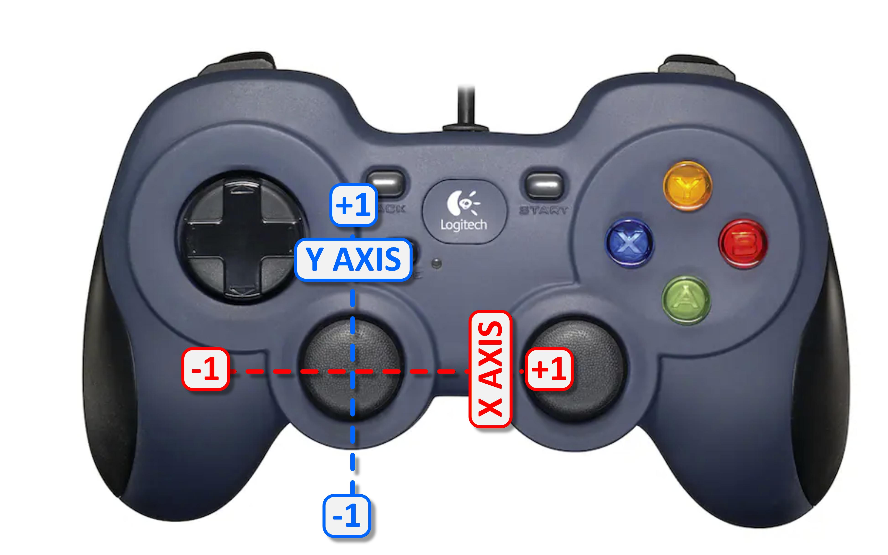

Think about how a bulldozer or a military tank turns. It does not have a steering wheel. Instead it has two tracks -- one on the left and one on the right. To go straight, both tracks move at the same speed. To turn, one track moves faster than the other. To spin in place, the tracks move in opposite directions.
different speeds. Same speed = straight. Different speeds = turn.
Our FTC robot has four mecanum wheels, but for now we are going to ignore the fancy stuff and drive it like a tank. The left stick will control everything: push forward to go forward, push sideways to spin.
The robot has four motors -- one at each corner:
frontLeft and backLeft on the left sidefrontRight and backRight on the right sideFor tank drive, both left motors always get the same power, and both right motors always get the same power. The two sides act like the two tracks on a tank.
If you look at the code above the while loop, you will see
that these motors are already set up for you:
DcMotor backLeft = hardwareMap.dcMotor.get("back_left_motor");
DcMotor frontLeft = hardwareMap.dcMotor.get("front_left_motor");
// ... and two more for the right side
Each motor has a name like "back_left_motor" that matches
the robot's wiring configuration.
You will also see that the left motors are reversed:
backLeft.setDirection(DcMotor.Direction.REVERSE);
frontLeft.setDirection(DcMotor.Direction.REVERSE);
Why? The left motors are mounted as a mirror image of the right motors. Without reversing, sending positive power would spin the left side backward and the right side forward -- the robot would spin instead of driving straight. Reversing the left side fixes this so that positive power always means forward for every motor.
You do not need to type any of this. It is already in the code. But understanding it will help you debug problems later.
Time to write some code. The joystick gives us two values we care about:
These values are doubles -- numbers with decimal points like
0.5 or -0.73. The joystick outputs doubles between -1.0
(full one direction) and 1.0 (full the other direction). A
gentle push might give 0.2. Letting go gives 0.0.

from -1.0 to 1.0. This is called proportional control --
small push = slow, big push = fast.
There is one catch: the Y axis is inverted. Pushing the stick
up gives -1.0, and pushing it down gives +1.0. That
feels backward, so we negate it with a minus sign.
Then type the code from the green block right below the
Add your tank drive code below comment:
double drive = -gamepad1.left_stick_y;
double spin = gamepad1.left_stick_x;
Now drive is positive when you push forward (natural) and
spin is positive when you push right.
Here is where the tank logic happens. We need to combine drive
and spin into two power values -- one for the left side and
one for the right side.
The formula is simple:
Let's walk through some examples to see why this works:
Going straight forward -- you push the stick straight up.
drive = 1.0, spin = 0.
Left = 1.0 + 0 = 1.0. Right = 1.0 - 0 = 1.0.
Both sides get the same power. The robot drives straight.
Spinning right -- you push the stick to the right.
drive = 0, spin = 1.0.
Left = 0 + 1.0 = 1.0. Right = 0 - 1.0 = -1.0.
Left goes forward, right goes backward. The robot spins clockwise.
Curving forward-right -- you push the stick up and to the right.
drive = 0.8, spin = 0.3.
Left = 0.8 + 0.3 = 1.1. Right = 0.8 - 0.3 = 0.5.
Left goes faster than right. The robot curves to the right.
We also multiply by 0.5 to keep things at half speed while
you are learning. You can change this to 1.0 for full speed
once you are comfortable.
double leftPower = (drive + spin) * 0.5;
double rightPower = (drive - spin) * 0.5;
The last step is telling the motors to actually spin. The method
setPower() takes a value from -1.0 (full reverse) to 1.0
(full forward). Zero means stop.
Both left motors get leftPower. Both right motors get
rightPower. That is what makes it tank drive.
backLeft.setPower(leftPower);
frontLeft.setPower(leftPower);
frontRight.setPower(rightPower);
backRight.setPower(rightPower);
That is everything. Your complete Tank Drive code should look like this:
[ Tank Drive : Loop ]double drive = -gamepad1.left_stick_y;
double spin = gamepad1.left_stick_x;
double leftPower = (drive + spin) * 0.5;
double rightPower = (drive - spin) * 0.5;
backLeft.setPower(leftPower);
frontLeft.setPower(leftPower);
frontRight.setPower(rightPower);
backRight.setPower(rightPower);
Push the left stick forward -- you should see the wheels on the bench robot start spinning! Push sideways and watch the left and right wheels spin in opposite directions -- that is a tank spin. Push diagonally and one side spins faster than the other.
The robot is on jack stands so it will not move, but you can see the direction and speed of every wheel. Notice that pushing the stick halfway gives half speed. That is proportional control at work -- the further you push, the faster the wheels go.
Now try it on the competition field! Click Return to Match at the bottom of the screen, load your code package on the red or blue Driver Hub, compile, and drive your robot around the arena.
What's next? Right now the robot can only go forward, backward, and spin. It cannot strafe sideways even though it has mecanum wheels. A future lesson will unlock that ability by using all four wheels independently instead of pairing them as left and right.